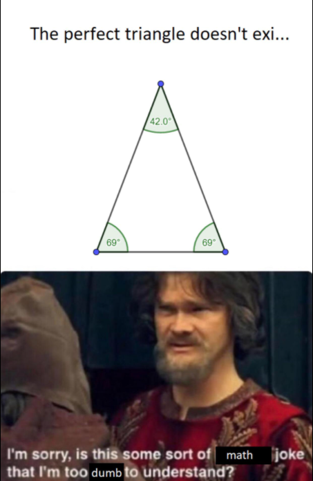

Examentip Wiskunde A #1: Oefen je algebraïsche vaardigheden Algebraïsche vaardigheden zijn belangrijk op het examen Wiskunde A. Idealiter heb je zoveel geoefend dat je zonder problemen complexe berekeningen kunt uitvoeren. Zorg bijvoorbeeld dat je oefent in het rekenen met breuken, wortelvormen, bijzondere producten en machten.
Examentip Wiskunde A #2: Zorg dat je de voorrangsregels kent In de wiskunde hebben bepaalde bewerkingen voorrang bij de volgorde van een berekening. Je kunt dit onthouden met het ezelsbruggetje 'Hoe Moeten Wij Van De Onvoldoendes Afkomen'. Dit staat voor haakjes, machtsverheffen, worteltrekken, vermenigvuldigen, delen, optellen en aftrekken. Hoe eerder iets voorkomt in het ezelsbruggetje, des te hoger de prioriteit. Uitzondering hierbij zijn vemenigvuldigen en delen (die hebben dezelfde prioriteit), net als optellen en aftrekken (die hebben ook dezelfde prioriteit). De som 40 – 20 / 2, wordt dus opgelost door eerst te delen en daarna pas af te trekken: 40 – 10 = 30. Als je de voorrangsregels niet toepast op deze som, zou je een ander antwoord hebben gekregen.

Examentip Wiskunde A #3: Schrijf altijd op hoe je tot je antwoord bent gekomen Schrijf bij het beantwoorden van een vraag al je tussenliggende denkstappen op. Wanneer je een rekenmachine gebruikt levert het vaak punten op als je zegt wat je invoert en welke functies je hebt gebruikt. Als je enkel de vraag hebt beantwoord met het feitelijke antwoord, en je denkstappen weglaat, dan kan dit je kostbare punten kosten. Nadat je een lange berekening hebt gemaakt, komt er een getal uit als antwoord. Geef ook aan wat dit getal betekent in de context van de vraag.
Examentip Wiskunde A #4: Check of je antwoord wel reëel is Check altijd of jouw antwoord op de vraag wel binnen alle redelijkheid valt. Stel, een taart wordt in stukken verdeeld en er wordt gevraagd hoeveel stukken taart een persoon krijgt. Als jouw antwoord op 20.000 stukken taart uitkomt, dan gaat er waarschijnlijk iets niet goed. Lees dan de vraag opnieuw en kijk of je een rekenfout hebt gemaakt. Nog een voorbeeld: stel er wordt gevraagd hoeveel personen in een klaslokaal zitten, en jouw antwoord komt uit op 567 personen. Dat klinkt niet logisch, dus reken dan alles nog een keer na. Kijk dus altijd of je antwoord wel reëel is.
Examentip Wiskunde A #5: Let op eenheden en decimalen achter de komma Lees de vraag goed en let goed op de eenheden in de vraag. Als er bijvoorbeeld in de vraag gegevens staan in zowel centimeter als meter, dan kun je het beste eerst alles omrekenen in dezelfde eenheid. Zet ten slotte je antwoorden in de juiste eenheid en in het juiste aantal decimalen achter de komma.